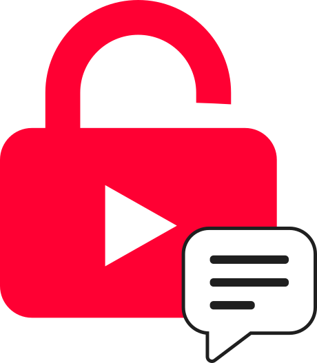

Read and post comments
Start or join a discussion on YouTube videos with disabled comments.

Unlock YouTube CommentsChrome extension
Read existing discussions, post comments, reply to others, and join conversations even when the creator has turned YouTube comments off.
Works on YouTube videos where the built-in comment section is unavailable.
Features
Start or join a discussion on YouTube videos with disabled comments.
Reply to specific users and follow conversations in a clear threaded layout.
Stay in control of your own comments by editing or removing them.
React to comments and help useful contributions become easier to find.
See when someone replies to you or interacts with your comments.
Secure sign-in helps protect accounts, reduce spam, and support notifications.
How it works
The extension adds a comment section below YouTube videos with disabled comments. These comments run separately from YouTube's built-in comment system.
Add it from the Chrome Web Store.
Visit a YouTube video with disabled comments.
Read comments, post your own, and reply to others.
FAQ
Yes. Once the extension is installed, it adds its own comment section below the video so you can read and post comments even when YouTube's comments are disabled.
No. These are separate, extension-powered comments for YouTube videos with disabled comments — they don't turn YouTube's own comments back on.
Google sign-in is used to support secure accounts, comment ownership, spam prevention, and notifications. Your Google password is not shared with the extension.
No. It adds a separate interface below the video page and does not alter the video itself.
Start commenting